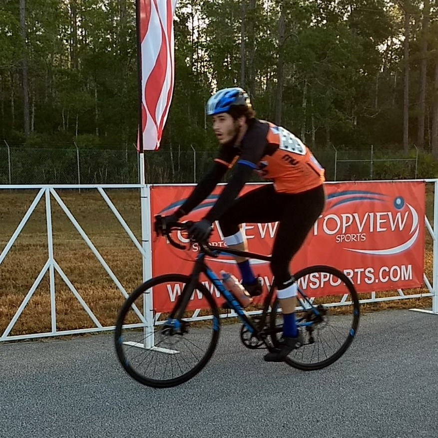

About Me

Hey there fellow human!
Thanks for checking out my website. It's not a masterpiece but its my piece.
My name is Akram Weheba and I'm a senior majoring in Computer Science at the University of Florida.
I'm expecting to graduate at the end of Spring 2021 with a B.S.
I started at UF back in 2016 as a Microbiology major following a pre-health track.
Back in highschool I took AP computer science and got to really enjoy programming.
I fell out of touch with programming for a while until probably late 2018, when I decided to take a C++ course at UF.
After taking the course I felt like I needed to get a minor in CS just so I could spend more time coding and not learning about pyruvate and ester linkages.
A few more courses in, and I knew it had to happen.
I basically finished the Microbiology degree then decided that I didn't really want to be a doctor.
It took a while to commit, but at the start of last year(2019) I commited to being a CS major.
On the plus side, I'm pretty great with science.
Since then I've had at least some experience with Java, C++, Python, SQLite, MariaDB, and now HTML/CSS.
Most of my real world experiences programming come from my experience at laboratories.
While I was pre-health, I helped create scripts to analyze microscopic images.
We used staining to identify different cells.
Using those cells we'd create scripts to compute values such as relative densities, nuclei, etc.
In my second lab, I helped on a cybersecurity team that worked with voice processing systems attacks.
We worked on different python scripts to trick software such as siri into executing a command using purturbed audio.
Right now I feel most fluid in c++, but that fluctuates month to month.
When I'm not in hackerman mode I like to build things(check out the woodworking page), race in the SECCC(southeastern collegiate cycling confrence), and cook(and eat?!?!).
LinkedIn
Github
Email